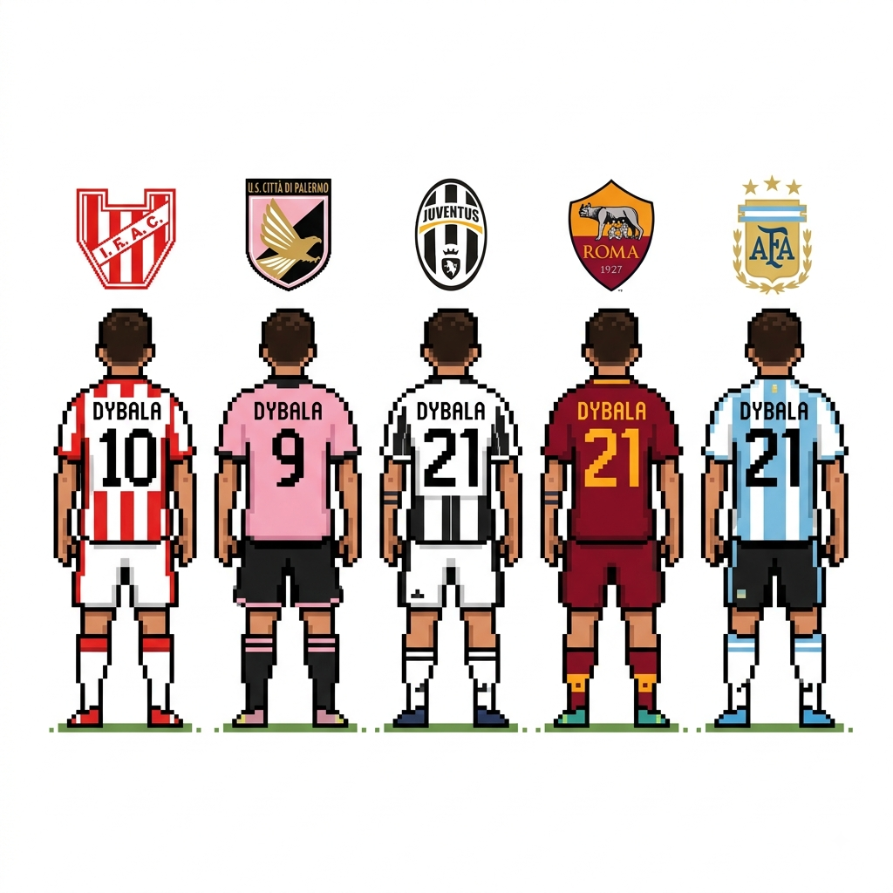

Dybala na Champions League
Aqui voce vai saber tudo sobre o Dybala na UCL
O Paulo Dybala, também conhecido como "La Joya" (A Joia), teve momentos mágicos e inesquecíveis na UEFA Champions
League, a grande maioria deles vestindo a camisa da Juventus.
Aqui estão algumas das curiosidades e dos momentos mais marcantes dele no maior torneio de clubes do mundo:
1. A Noite em que Ofuscou o "Trio MSN"
Em 2017, no jogo de ida das quartas de final contra o Barcelona, Dybala teve provavelmente a sua maior atuação na
história da Champions. A Juventus venceu por 3 a 0, e o argentino marcou dois golaços logo no primeiro tempo,
roubando a cena contra o famoso trio do Barça formado por Messi, Suárez e Neymar.

2. O Hat-Trick de Elite
Fazer três gols em um único jogo de Champions League é um feito para poucos! Na fase de grupos da temporada
2018/19, Dybala marcou um hat-trick contra o time suíço Young Boys. Com a ausência de Cristiano Ronaldo naquela
partida, Dybala chamou a responsabilidade e garantiu a vitória da Juventus por 3 a 0.

3. O Gol "Impossível" de Falta
Em novembro de 2019, jogando contra o Atlético de Madrid, Dybala fez um gol de falta absurdo. Ele chutou com a
perna esquerda de uma distância e de um ângulo dificílimos — quase em cima da linha de fundo. A bola pegou um efeito
perfeito e foi direto para a rede, garantindo a vitória por 1 a 0. É considerado um dos gols de falta mais bonitos
da competição na última década.

Clubes e Seleção que Dybala Jogou
Clubes Profissionais
Instituto de Córdoba (Argentina) — 2011 a 2012
Palermo (Itália) — 2012 a 2015
Juventus (Itália) — 2015 a 2022
Roma (Itália) — 2022 até o momento
Seleção Nacional
Seleção Argentina — Desde 2015
